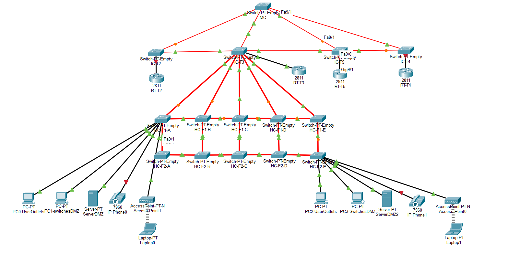

Linguagens
Java · C · JavaScript · TypeScript · SQL · PL/SQL · Assembly RISC-V · Prolog
Portefólio pessoal / 2026
Estudante de Engenharia Informática no ISEP
Procuro um estágio curricular com início previsto para fevereiro de 2027.
01 / Percurso
Estou no 3.º ano da Licenciatura em Engenharia Informática no Instituto Superior de Engenharia do Porto (ISEP), com conclusão prevista para julho de 2027.
Ao longo do curso participei em projetos de desenvolvimento de aplicações, sistemas, bases de dados e redes. Tenho especial interesse em Backend e Full-stack e gosto de perceber como as diferentes partes de uma aplicação funcionam em conjunto.
Trabalhei em equipa com a metodologia Scrum e desempenhei funções de Scrum Master em projetos académicos. Gostaria de aplicar o que aprendi, conhecer novas ferramentas e continuar a desenvolver as minhas competências em contexto profissional.
02 / Ferramentas e conhecimentos
Java · C · JavaScript · TypeScript · SQL · PL/SQL · Assembly RISC-V · Prolog
Spring Boot · REST APIs · Spring Security · JPA
React · JavaFX · HTML · CSS · Three.js · Vite
PostgreSQL · MongoDB · Oracle Database · H2
Git · GitHub · Maven · Postman · JUnit · Vitest · React Testing Library
Scrum · OOP · DDD · TDD · Onion Architecture · Clean Architecture
03 / Trabalho académico
Alguns dos projetos em que participei durante a licenciatura.
5.º semestre · Set. 2026 — Presente
Aplicação Full-stack para gestão de restauração, desenvolvida com Java, Spring Boot, React, TypeScript e MongoDB. Inclui APIs REST, autenticação e persistência de dados, seguindo princípios de DDD e Onion Architecture.
A minha participação: Participei no desenvolvimento de APIs REST e desempenhei funções de Scrum Master, com responsabilidades no planeamento e acompanhamento do trabalho da equipa.
4.º semestre · Fev. — Jul. 2026
Sistema de gestão e simulação de tráfego aéreo com Java, C e PostgreSQL, envolvendo comunicação TCP/UDP, princípios de engenharia de software e testes automatizados.
A minha participação: Desempenhei o papel de Scrum Master durante o segundo sprint.
3.º semestre · Set. 2025 — Jan. 2026
Solução de gestão de logística ferroviária desenvolvida com Java, C, Assembly RISC-V, SQL e PL/SQL. Aplicação de algoritmos, estruturas de dados e bases de dados relacionais.

NETWORKS4.º semestre · Fev. — Mai. 2026
Desenho e simulação de uma rede para um campus aeroportuário no Cisco Packet Tracer, com VLANs, endereçamento IPv4, routing OSPF e serviços DNS, DHCP e VoIP.
A minha participação: Trabalhei na infraestrutura do Terminal 3, na integração do campus e fui Scrum Master no primeiro sprint.
2.º semestre · 2025
Jogo de gestão ferroviária em Java e JavaFX com cenários históricos, construção de linhas, compra de locomotivas e representação das redes em grafos para calcular percursos.
A minha participação: Participei nas funcionalidades de listagem de estações, construção de linhas ferroviárias e compra de locomotivas.
04 / Vamos falar
Estou disponível para conversar sobre oportunidades de estágio curricular e desenvolvimento de software.
Disponível a partir de fevereiro de 2027